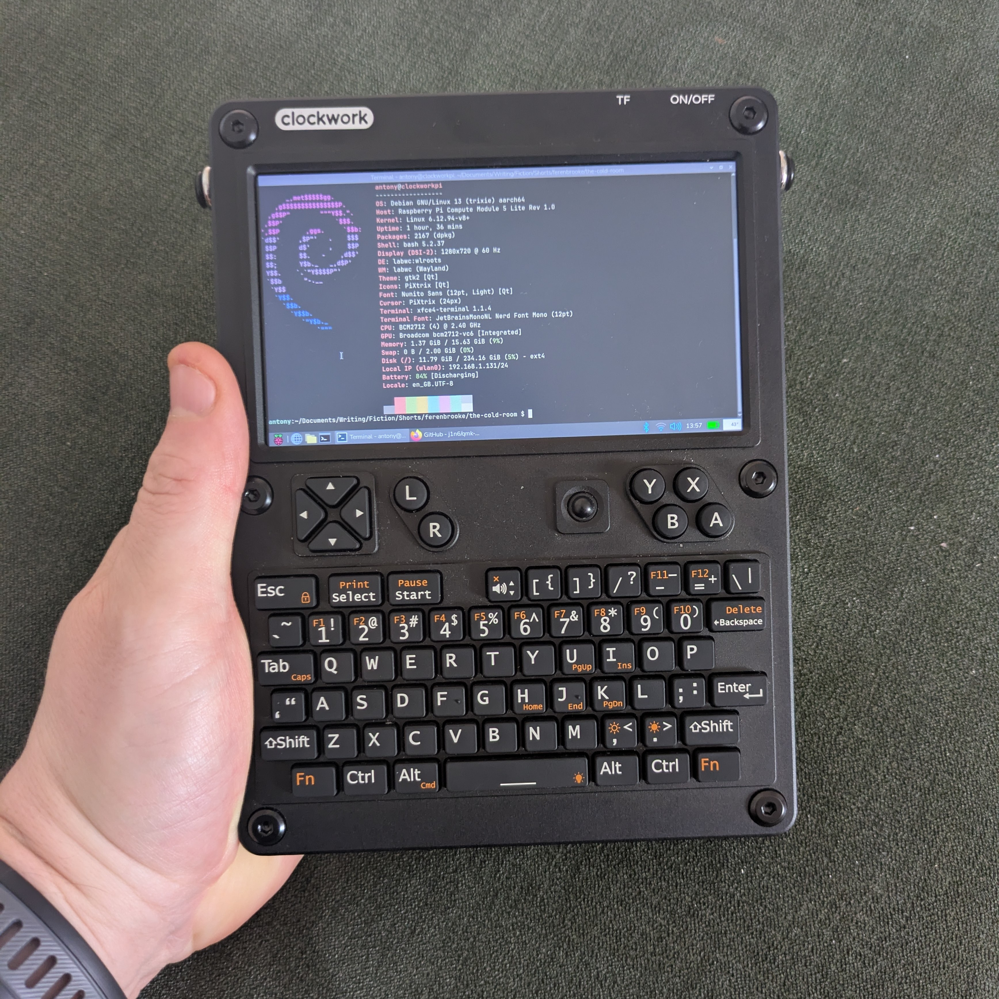
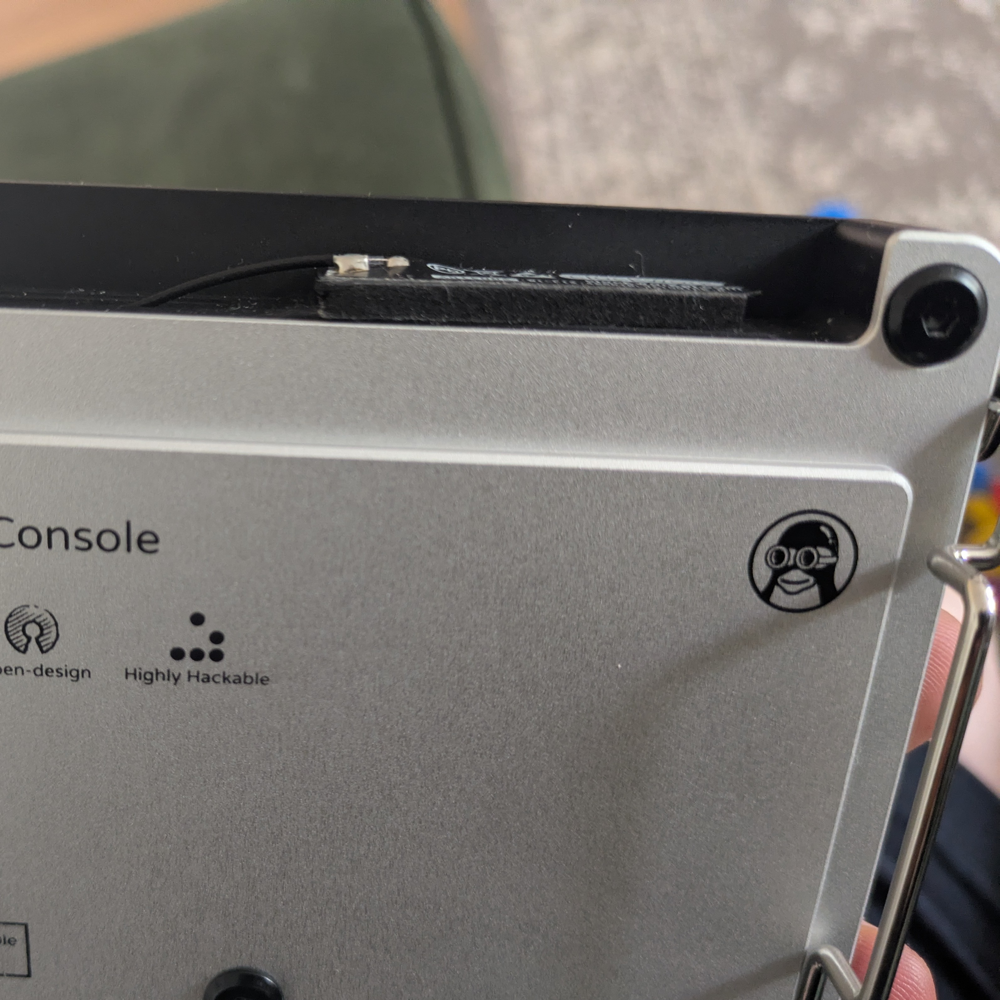
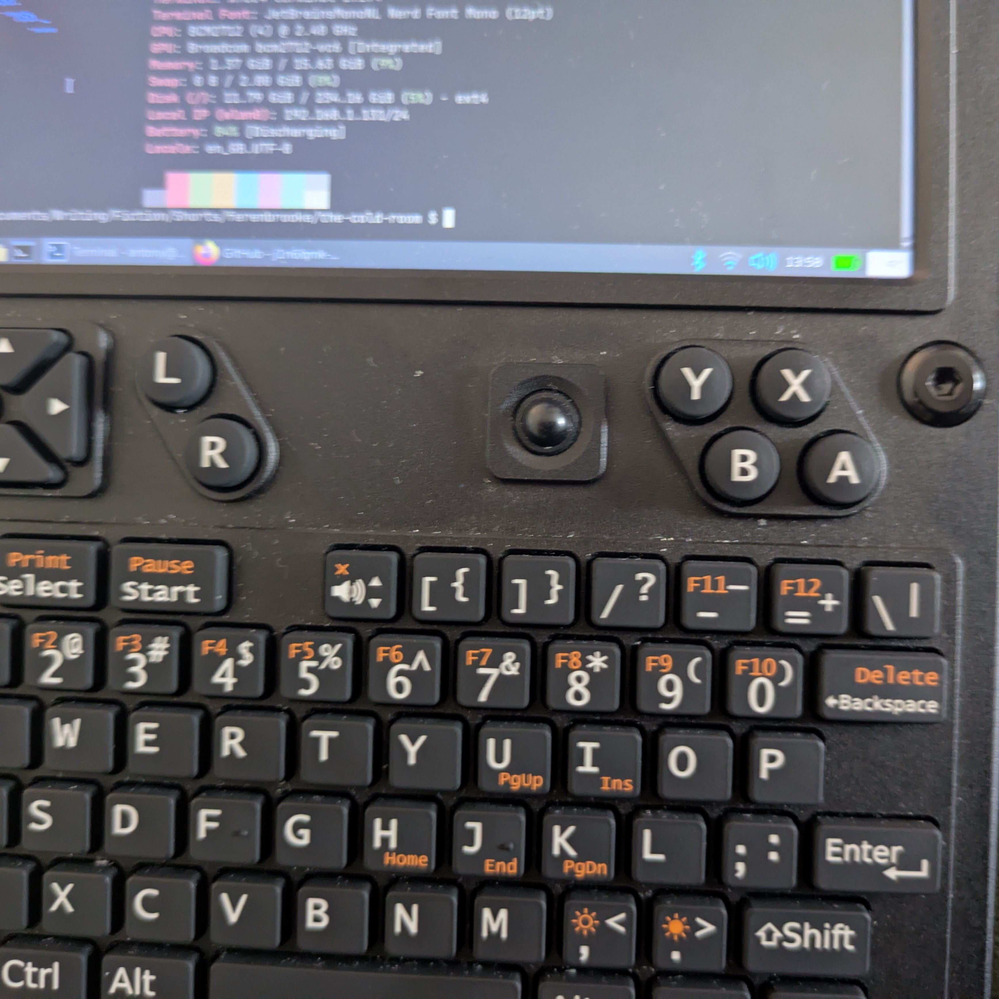

My Silly Handheld Computer
So I found myself with a 16GB Raspberry Pi CM5 Lite in search of a purpose. I’d been looking for something ultraportable that I could take to work, get a little writing done on the train and during breaks. Up to now I’ve been using my phone with a compact Bluetooth keyboard for this purpose, but frankly the experience left a lot to be desired.
Enter the Clockwork Pi uConsole.

This fella.
This device is somewhat cyberdeck-ish in appearance (I don’t say it’s a true cyberdeck because, in my mind, a cyberdeck is a custom build and the uConsole is a premade kit). It’s very small and highly hackable. There are multiple manufacturers making different modules and accessories for the device and people are doing really cool things with them. Software defined radio shenanigans, pentesting, retro gaming via emulation, so on and so forth. Lots of Linux-y, Raspberry Pi goodness.
I’m basically just using mine for writing right now, but I may find some more varied uses for it down the line. Thought it’d be nice to write a little about getting started with the device, for anyone thinking of getting one. Also for myself, since I won’t remember all this.
Getting The Bloody Thing
Clockwork Pi takes a very long time to act on orders, so consider the secondary market if you don’t want to wait nine months. I bought mine on Aliexpress, from a seller called OpenSourceSDRLab. They seemed somewhat reputable based on what I was able to dig up and the extra 20 quid or so over buying direct from manufacturer wasn’t too offensive. I got it in two weeks. I’ve heard it’s best to order without the Pi included (massive markup) so that’s what I did. I went for the version without 4g because I always have a phone on me that I can use as a hotspot so it felt entirely redundant.
Extra Bits
You need a Raspberry Pi CM4 (or CM5, more on that in a minute). I went for a CM5 with 16GB of RAM and no onboard storage (I already had this device). Prices are bananas right now, so use what you’ve got or get what you can find if having one of these is important. There are a couple of other Compute Module type devices that can work, but the Raspberry Pi devices are the path of least resistance as far as I can tell.
You’ll also need a couple of 18650 batteries and an SD card. I got these from thepihut.com and Amazon respectively. I also got some 3mm thick double sided adhesive pads from Amazon.
Assembly
This thing is a kit. You don’t need any extra tools, it’s all pretty straightforward. The WiFi antenna will be in a poor position for actually receiving signal, so I used one of the aforementioned 3mm adhesive pads to give it a better view. I’ve had no issues with WiFi, so that seems to be enough.

See that protruding black rectangle? Gets the antenna just clear of the aluminium chassis for better signal.
Software
Manufacturer image is out of date. It potentially won’t work out of the box with the current version of the screen. Luckily the community has stepped up here. I’m using a Trixie image from a bloke called Rex which puts Clockwork Pi’s kernel patches onto a newer kernel and wraps that in the most recent Raspberry Pi OS. It’s a familiar Debian environment akin to the VPS this very site is hosted on, so I’m pretty comfortable. I’d love OpenBSD on this thing, but Debian-based Linux is perfectly fine.
Debian feels fluffy and warm, and the Raspberry Pi guys have enough good sense not to stray too far from upstream.
CM5 Caveat
Read that link about Rex’s Trixie image if you haven’t. It contains a workaround for if your CM5 is picky and won’t boot off your SD card for whatever reason. I’m using a 256GB Sandisk microSD and didn’t see this issue, but a lot of people seem to.
The other CM5 issues are heat and power consumption. I haven’t had massive heat issues, but I’m not pushing this thing very hard. The battery life could be better. But overall, I’m happy with the CM5. A CM4 would be the safer bet if you don’t need the extra power, though. Either way, get one without internal storage. You want an external SD card which you can take out and flash easily.
Mods
I haven’t done any yet. I’ve got a heat sink which I’ll attach if the CM5 gets too angry and I may replace the keyboard/trackball firmware and otherwise mess with the pointing device, I’ll write about it if I decide to travel that road.
I’ve got my eye on some of the software defined radio mods from HackerGadgets (though I don’t have the faintest idea about anything SDR; it just sort of appeals to me conceptually) as well as potentially their NVME battery board. May also put a better WiFi antenna on this thing. We’ll see. None of that is critical for how I’m using it.
Weak Points
This is not a perfect computer. Battery life leaves something to be desired (though it’s not terrible), the screen is tiny, the keys can be a tad fiddly, and the pointing device is grumpy as all hell. That last bit seems to be a major point of contention among uConsole users. It’s a Blackberry trackball. It is mercurial as hell. This can apparently be improved with QMK firmware but I’ve left it as-is since I barely use a pointing device anyway. You can also supposedly clean the ball with isopropyl alcohol and/or rough it up with fine grit sandpaper to improve the experience.

The bane of many a uConsole owner.
How I Use It
For me, that trackball limitation and the tiny screen are actually advantages. Because I’m using this primarily as a writing device (and I write in Emacs and Vim), having some speed bumps between me and GUI distractions is very good for my productivity. I can still do stuff like check the web for research purposes, still handle git operations, still ssh into my servers and do stuff there. It’s about the right balance of convenient and pain-in-the-arse for my purposes. Your mileage will vary.
In Conclusion
This is a fun device to muck around with. It’s perhaps not the most practical for most people (even if it suits me down to the ground) but being super hackable, computer-y enough to do serious stuff on if necessary, and having a decent active community means that it is a worthy purchase for the right sort of nerd. Very much a good toy for tinkerers and a potentially useful work device for lunatics.
Alright, that’s enough from me. Thanks for reading.
Toodles,
–Antony F.